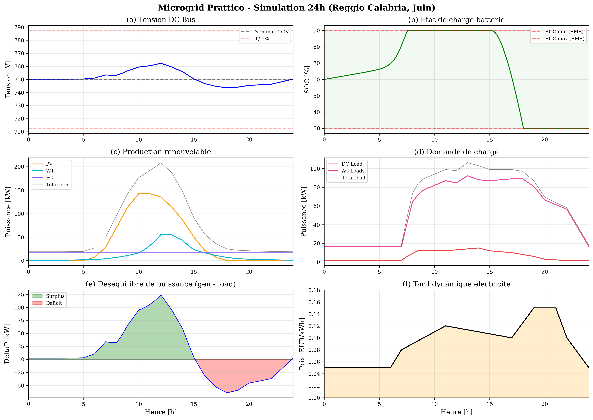
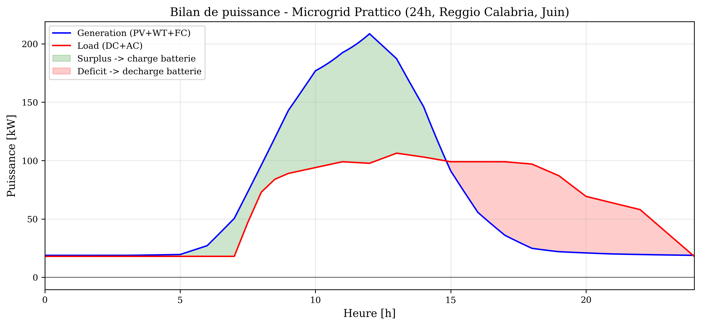
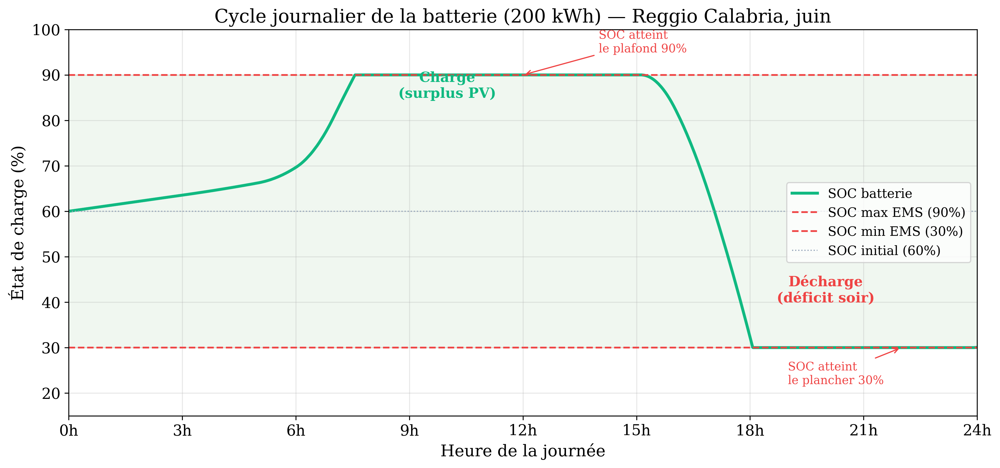
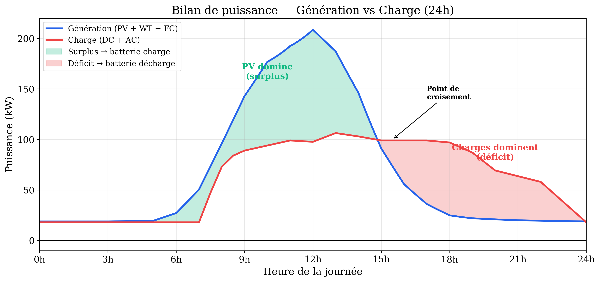
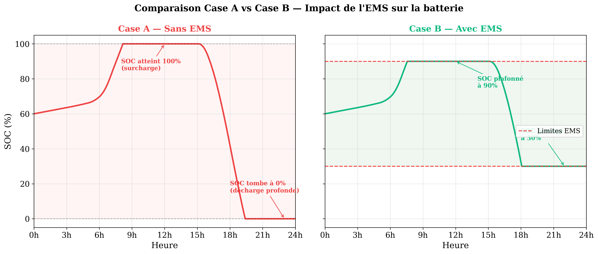

Reproduction Simscape du Microgrid
Prattico et al. (2025)
Avancement — Réunion du 18 Mars 2026
Validation complete
Tous composants
Table 3 (sur 60 règles)
Profils complets
Mars 2026
Sommaire
Rappel Meeting #6, bilan, architecture papier et implémentée, branches PV, Batterie, WT, FC, Charges et VSC.
Slides 2–9Norme IEEE 1547, catégories I/II/III, justification Cat II, comparaison.
Slides 10–15Architecture EMS Fuzzy, validation FIS, simulation 24h, courbes, analyses détaillées, démo live.
Slides 16–23I/O et standards, données, roadmap, AutoResearch, état de l'art, limitations et conclusion.
Slides 24–33Rappel Meeting #6 (11 Mars 2026)
Ce qui était demandé
- Approfondir IEEE 1547 : formules, catégories, limites
- Reproduire le microgrid Prattico en Simscape
- Valider chaque composant avec les équations du papier
- Identifier les paramètres explicites vs inferes
Ce que nous apportons
- [FAIT] IEEE 1547 : 2003 vs 2018, Cat I/II/III
- [FAIT] Clone Simscape : 84/84 tests
- [FAIT] Équations validées : PV, Batt, WT, FC, VSC
- [FAIT] Tags EXPLICITE / INFERENCE / OUVERT
Ce qui a été fait
Total validation
B, C, D, E, F, G, H
Sim 24h complete
Architecture papier (Figure 1 — Prattico et al.)
50kW (PF=1)
45kW (PF=0.9)
(Bidirectionnel)
150kWp
512V/400Ah
18kW
55kW
15kW
| Paramètre | Valeur | Source |
|---|---|---|
| Bus DC | 750 V | EXPLICITE Table 1 |
| PV | 150 kWp (12s x 23p) | EXPLICITE Table 1 |
| Batterie | 512 V / 400 Ah LiFePO4 | EXPLICITE Table 1 |
| Puissance totale | ~330 kW | INFERENCE somme composants |
Architecture implémentée
| Composant | Papier | Notre modèle | Niveau |
|---|---|---|---|
| PV + Boost | Eq. 8, 150 kWp, MPPT P&O | Single-diode, D=0.4 fixe | Physique |
| Batterie + Buck/Boost | Eq. 17-18, 512V/400Ah | SOC intégré, PI régulateur | Physique |
| Wind Turbine | Eq. 10, PMSG, 55kW | P = 0.5*rho*A*v^3*Cp | Average |
| Fuel Cell | Eq. 15-16, PEMFC, 18kW | Nernst + pertes | Average |
| DC Load | 15 kW peak | R(t) = V^2 / P(t) | Physique |
| VSC | Bidirectionnel AC/DC | I = P/V, saturation ±200A | Average |
| AC Loads | Residential + Commercial | 50kW PF=1, 45kW PF=0.9 | Physique |
| MPPT P&O | Perturb and Observe | — | Absent |
| EMS Fuzzy | Mamdani, 60 règles | FIS standalone validée sur les cas représentatifs (7/60 règles) | Partiel |
Branche Photovoltaïque
| Paramètre | Valeur | Source |
|---|---|---|
| Puissance PV | 150 kWp | EXPLICITE |
| Configuration | 12s × 23p (276 modules) | EXPLICITE |
| Duty Cycle D | 0.4 (fixe) | INFERENCE |
| Voc module | ~38 V | INFERENCE |
| Isc module | ~9 A | INFERENCE |
Avec D = 0.4 : Vout ≈ Vin / 0.6
Branche Batterie
Buck : Vout = D · Vin
| Paramètre | Valeur | Source |
|---|---|---|
| Tension nominale | 512 V | EXPLICITE |
| Capacité | 400 Ah | EXPLICITE |
| Chimie | LiFePO4 | EXPLICITE |
| SOC limites | 30% – 90% | EXPLICITE |
Kp = 0.0001, Ki = 0.02
Mode Buck (charge) : abaisse la tension bus vers la batterie.
Wind Turbine + Fuel Cell (Average-Value)
Wind Turbine
| Paramètre | Valeur | Source |
|---|---|---|
| Puissance nom. | 55 kW | EXPLICITE |
| Cp max | 0.48 | EXPLICITE |
| Rayon rotor | ~9.5 m | INFERENCE |
| Génératrice | PMSG | EXPLICITE |
Fuel Cell (PEMFC)
| Paramètre | Valeur | Source |
|---|---|---|
| Puissance nom. | 18 kW | EXPLICITE |
| Type | PEMFC | EXPLICITE |
| Nb cellules N | ~65 | INFERENCE |
Charges DC/AC + VSC
Pic : 15 kW
Bus : 750 V DC
PF = 1.0 (resistif pur)
230 V / 50 Hz
PF = 0.9 (inductif)
230 V / 50 Hz
Saturation courant : ±200 A
Lien bidirectionnel Bus DC ↔ Bus AC
Regulation : maintien VAC = 230 V rms
Vocabulaire IEEE 1547 — Les 4 concepts clés
IEEE 1547 — Le pivot de 2003 à 2018
Standard for Interconnection and Interoperability of Distributed Energy Resources with Associated Electric Power Systems Interfaces
- Tension ou fréquence hors limites → trip immédiat
- Le DER est passif : il injecte du courant, rien d'autre
- Puissance réactive interdite (PF = 1)
- Pas de ride-through, pas de support réseau
- Anti-îlotage obligatoire (déconnexion en 2 s)
- Ride-through obligatoire (rester connecté pendant les perturbations)
- Support réactif requis (volt-var, volt-watt, frequency droop)
- 3 catégories de performance (I, II, III)
- Îlotage intentionnel permis
- Protocoles d'interopérabilité requis
Catégorie I — Performance de base
- PV résidentiel < 25 kW
- Zone rurale, faible pénétration RES
- Générateur diesel de secours
- Machines synchrones (inertie mécanique)
| Seuil | Valeur | Durée |
|---|---|---|
| OV2 | 1.20 pu | 0.16 s |
| OV1 | 1.10 pu | 2.0 s |
| UV1 | 0.70 pu | 2.0 s |
| UV2 | 0.45 pu | 0.16 s |
Catégorie II — Performance intermédiaire (notre cas)
- Microgrid hybride AC/DC 100 kW – 10 MW
- Campus universitaire, bâtiment commercial
- Ferme PV moyenne (100-500 kW)
- Systèmes avec stockage batterie
- Inverter-based DER (standard minimum pour onduleurs)
| Seuil | Valeur | Durée |
|---|---|---|
| OV2 | 1.20 pu | 0.16 s |
| OV1 | 1.10 pu | 2.0 s |
| UV1 | 0.70 pu | 10.0 s (5× Cat I !) |
| UV2 | 0.45 pu | 0.16 s |
Catégorie III — Performance avancée
- Ferme solaire > 10 MW (utility scale)
- Parc éolien offshore
- Zone à 50 %+ de pénétration RES
- DER critique pour la stabilité du réseau
- Battery Energy Storage System (BESS) réseau
| Seuil | Valeur | Durée |
|---|---|---|
| OV2 | 1.20 pu | 0.16 s |
| OV1 | 1.10 pu | 13.0 s |
| UV1 | 0.88 pu | 21.0 s |
| UV2 | 0.50 pu | 2.0 s |
Cat I vs II vs III — Vue d'ensemble
| Seuil | Cat I | Cat II (Prattico) | Cat III | Ce que ça veut dire concrètement |
|---|---|---|---|---|
| UV1 | 0.70 pu / 2 s | 0.70 pu / 10 s | 0.88 pu / 21 s | Durée de maintien en sous-tension avant déconnexion |
| UV2 | 0.45 pu / 0.16 s | 0.45 pu / 0.16 s | 0.50 pu / 2.0 s | Seuil de coupure d'urgence en sous-tension sévère |
| OV1 | 1.10 pu / 2 s | 1.10 pu / 2 s | 1.10 pu / 13 s | Tolérance aux surtensions avant déconnexion |
| Volt-var | Optionnel | Obligatoire | Obligatoire + dynamique | Régulation de tension par injection/absorption de réactif |
| Freq. droop | Non requis | 5 % (obligatoire) | Ajustable 2-12 % | Réduction de P si la fréquence dépasse le nominal |
| Îlotage | Interdit | Possible | Natif | Le microgrid peut-il fonctionner sans le réseau ? |
Architecture EMS Fuzzy (Mamdani)
Entrees (Fuzzification)
| Variable | MF | Plage |
|---|---|---|
| ΔP (surplus/deficit) | 5 MF | [-1, +1] p.u. |
| SOC (état de charge) | 4 MF | [0, 100] % |
| Tarif (prix electricite) | 3 MF | [Low, Mid, High] |
Sorties (Defuzzification)
| Variable | Description |
|---|---|
| Pref_batt | Référence puissance batterie |
| Pref_AC | Référence puissance AC (grid) |
| Grid | Connexion/déconnexion réseau |
| FC | Activation fuel cell |
Opérateur AND : min
Agregation : max
Defuzzification : centroid
Fichiers :
create_prattico_fis.m, evalfis_custom.m
Validation FIS — 7/7 cas représentatifs de la Table 3 (sur 60 règles totales)
| # | ΔP | SOC | Tarif | Pbatt attendu | Grid attendu | FC attendu | Statut |
|---|---|---|---|---|---|---|---|
| 1 | Surplus + | Low | Low | Charge | Sell | OFF | PASS |
| 2 | Surplus + | High | High | Idle | Sell | OFF | PASS |
| 3 | Deficit − | High | High | Discharge | Idle | OFF | PASS |
| 4 | Deficit − | Low | Low | Idle | Buy | ON | PASS |
| 5 | Deficit −− | Low | High | Idle | Buy | ON | PASS |
| 6 | Balance | Mid | Mid | Idle | Idle | OFF | PASS |
| 7 | Surplus ++ | Low | High | Charge | Sell | OFF | PASS |
create_prattico_fis.m — Creation de la structure FISevalfis_custom.m — Évaluation sans Fuzzy Logic Toolbox
Simulation 24 heures
Profils d'entree
Résultats
dans les limites
autour de 750V
pour 86400s de simulation
Résultats 24h — 6 indicateurs

Données : PVGIS JRC (irradiance), profils Prattico Fig. 10 (charges), ARERA (tarifs) — Reggio Calabria, juin
Bilan de puissance — Generation vs Charge

Validation incrémentale B → H
| Phase | Composants | Tests | Statut |
|---|---|---|---|
| Phase B | PV + Boost seul | 12/12 | PASS |
| Phase C | PV + Batterie + Buck/Boost | 12/12 | PASS |
| Phase D | PV + Batt + Wind Turbine | 12/12 | PASS |
| Phase E | + DC Load | 12/12 | PASS |
| Phase F | + VSC (average-value) | 12/12 | PASS |
| Phase G | + AC Loads (residential + commercial) | 12/12 | PASS |
| Phase H | + Fuel Cell (PEMFC) | 12/12 | PASS |
Construction incrémentale
Zero regression
Case A (sans EMS) vs Case B (avec EMS)
Reproduction de la comparaison Prattico Table 7 — simulation 24h, mêmes profils
| Metrique | Case A (sans EMS) | Case B (avec EMS) | Cible papier |
|---|---|---|---|
| ΔV max | 5.0% | 1.7% | ±2% |
| SOC min | 0% (deep discharge) | 30% | 30% |
| SOC max | 100% (overcharge) | 90% | 90% |
| Battery DoD | 100% (destructeur) | 60% | ≤80% |
| VDC mean | 753.9 V | 751.3 V | 750 V |
| Duree de vie batterie | Degradee (deep cycling) | Prolongee (shallow cycling) | Extended |
Analyse détaillée — Cycle de la batterie (SOC)

Analyse détaillée — Bilan de puissance

Analyse détaillée — Impact de l'EMS sur la batterie

| Métrique | Case A (sans EMS) | Case B (avec EMS) | Signification |
|---|---|---|---|
| SOC min | 0% (décharge profonde) | 30% (protégé) | Pas de dégradation irréversible |
| SOC max | 100% (surcharge) | 90% (plafonné) | Pas de stress thermique |
| Cycles DoD | 100% (destructeur) | 60% (modéré) | Durée de vie ×2 à ×3 |
| ΔV bus DC | ±5.0% | ±1.7% | Conforme IEEE 1547 Cat II |
Résultats clés
±0.07% stable
(a 1000 W/m2)
(a 12 m/s)
PEMFC
dans les bornes
Démonstration live MATLAB
Inputs / Outputs / Standards par composant
Chaque composant est mappe vers ses standards IEEE/IEC. Document complet :
IO_STANDARDS_REFERENCE.md (536 lignes)
| Composant | Inputs | Outputs | Équations | Standards |
|---|---|---|---|---|
| PV 150kWp | G (W/m2), T_cell (C) | I_pv, V_pv, P_pv, D | Eq. 8 (single-diode), Eq. 18 (boost) | IEC 61215, IEC 61853, IEC 61724 |
| Battery 200kWh | V_dc, I_bat | SOC, V_bat, P_bat, D | Eq. 17 (Coulomb), Eq. 18 (buck-boost) | IEC 62619, IEEE 2030.2.1 |
| WT 60kW | v_wind (m/s, hub 60m) | P_wind, T_m, I_wt | Eq. 10 (Betz), Eq. 11 (rotor) | IEC 61400-1, IEC 61400-12-1 |
| FC 20kW | FC_connection, p_H2 | V_FC, I_FC, P_FC | Eq. 15 (Nernst), Eq. 16 (V_FC) | IEC 62282-3-100 |
| VSC 150kVA | V_dc, P_ref, Q_ref | P, Q, THD_V, TDD | Eq. 6-7 (dq frame) | IEEE 1547-2018, EN 50549 |
| EMS Fuzzy | DeltaP, SOC, Tariff | P_ref_batt, P_ref_AC, Grid, FC | Mamdani, max-min, centroide | IEEE 2030.7, IEEE 2030.8 |
| PQ Monitor | V_pcc, I_pcc, f | DeltaV, Deltaf, THD_V, TDD | Eq. 1-4 (FFT) | IEEE 519, IEC 61000-4-7 |
Carte des standards par couche
Données disponibles — 13 sources identifiées
| Donnée | Source | Format | Volume | Standard | Statut |
|---|---|---|---|---|---|
| Irradiance PV | PVGIS (JRC EU) — Reggio Calabria | CSV | 8 760 pts/an | IEC 61724 | Téléchargé |
| TMY complet | PVGIS TMY generator | CSV | 8 790 pts | IEC 61724 | Téléchargé |
| Vent (hub 60m) | PVGIS + correction IEC 61400-1 | CSV | 8 760 pts | IEC 61400-1 | Corrigé |
| T cellule PV | Calcul NOCT (T_amb + 0.031×G) | CSV | 8 760 pts | IEC 61215 | Calculé |
| Tarif électricité | ARERA bandes F1/F2/F3 | CSV | 720 pts (30j) | ARERA 654/2023 | Téléchargé |
| Charges calibrées | Prattico Fig.10 + ISTAT + variabilité | CSV | 720 pts (30j) | EN 50160 | Généré |
| Courbe OCV(SOC) | CALCE + Baronti (2013) | CSV | 21 pts | IEC 62619 | Disponible |
| Courbe V-I FC | OPEM simulator | CSV | 17 pts | IEC 62282 | Disponible |
| Microgrid réel | Mesa Del Sol (Kaggle) | CSV | 13 mois, 10s | — | Référence |
| Benchmark EMS | EMSx (70 sites industriels) | CSV | Multi-sites | — | Référence |
| Benchmark réseau | SimBench (topologies EU) | Multi | Annuel | — | Référence |
| Communauté énergie | Zenodo (250 ménages, PV+batt) | CSV | Annuel | — | Référence |
| Prix spot marché | GME / ENTSO-E | API | Horaire | EU reg. | À télécharger |
Exemple — Irradiance solaire, 15 juin 2019, Reggio Calabria
| Heure | Irradiance (W/m²) | Vent 10m (m/s) | Vent 60m (m/s) | T amb (°C) | T cellule (°C) |
|---|---|---|---|---|---|
| 0h | 0 | 2.44 | 3.14 | 18.6 | 18.6 |
| 6h | 277 | 1.73 | 2.22 | 19.5 | 28.2 |
| 9h | 814 | 1.51 | 1.94 | 22.5 | 47.9 |
| 12h | 966 | 1.13 | 1.45 | 23.5 | 53.7 |
| 15h | 658 | 1.11 | 1.43 | 23.6 | 44.2 |
| 18h | 82 | 0.92 | 1.18 | 22.5 | 25.1 |
| 21h | 0 | 1.84 | 2.37 | 20.0 | 20.0 |
- Pic PVGIS : 966 W/m² — confirme le papier (~1000 W/m²)
- Vent corrigé : facteur ×1.29 (IEC 61400-1, α=0.14)
- T cellule : +30°C par rapport à l'ambiant au pic
- Prix spot GME zone CALA (nécessite API mercati-energetici)
- Charges réelles Terna Calabre (nécessite API REST)
- Données microgrid mesuré pour validation croisée (Mesa Del Sol identifié)
Pourquoi ces données — Validation, calibration, généralisation
Positionnement dans la these
Contribution scientifique
Un agent IA autonome (AutoResearch, Karpathy 2026) lit le code EMS, forme des hypothèses, modifie les règles, exécute la simulation, évalue les résultats.
Le Simscape validé sert de laboratoire. Les contraintes IEEE 1547 Cat II sont des barrières de sécurité que chaque expérience doit respecter.
L'agent découvre des configurations EMS optimales et sûres — 1000+ expériences en une nuit, impossible manuellement.
Timeline
Direction proposée — AutoResearch pour Microgrid
- L'EMS fuzzy est conçu manuellement (80 règles par un expert)
- Pas de garantie d'optimalité (l'espace de design est trop grand)
- Réactif, pas proactif (détecte les violations APRÈS)
- Un agent IA lit le code, forme une hypothèse, modifie, exécute, évalue
- 630 lignes, MIT license, 700 expériences en 2 jours
- Pas encore appliqué, à notre connaissance, aux systèmes énergétiques
- Le Simscape validé = le laboratoire (3s par simulation)
- L'agent découvre les configurations EMS optimales
- Contraintes IEEE 1547 = barrières de sécurité
- 1000+ expériences en une nuit
- "Autonomous Discovery of Optimal EMS via Agentic AI Experimentation"
- Première application d'AutoResearch hors du ML training
- EMS découvert > EMS manuel (Prattico)
- Sûr par construction (IEEE 1547 Cat II)
État de l'art — Comment les EMS sont conçus aujourd'hui
| Approche | Principe | Avantage | Limite | Exemples récents |
|---|---|---|---|---|
| Fuzzy Logic (Mamdani, 1975) |
Règles SI-ALORS conçues par un expert humain | Léger (5-10 μs), interprétable, embarquable | Manuel : l'expert ne peut pas explorer toutes les combinaisons | Prattico (Énergies 2025), Ahmad et al. (Sci. Reports, 2024) |
| DRL end-to-end (SAC, PPO, DQN) |
Un réseau de neurones apprend la politique par essai-erreur | Découvre des stratégies non évidentes, adaptatif | Boîte noire : pas interprétable, pas de garantie de sécurité | Zhang et al. (IEEE Trans. Ind. Appl., 2025), SmartGrid AI platform (Énergies 2025) |
| MPC (Model Predictive Control) |
Optimise sur un horizon glissant avec contraintes explicites | Optimal sous contraintes, prédictif | Lourd : résolution d'optimisation à chaque pas (ms), pas embarquable | Prattico cite comme alternative (§2.10), hybride MPC+FL (2024) |
| Physics-shielded DRL | DRL avec contraintes physiques intégrées dans l'apprentissage | Sûr pendant l'entraînement, respecte les limites physiques | Complexe : architecture lourde, pas interprétable | Li et al. (Appl. Energy, 2025), batterie health-aware |
| Hybride Fuzzy + RL | RL optimise les paramètres d'un contrôleur fuzzy | Combine interprétabilité et adaptation | Complexité de l'architecture double | Fuzzy Q-Learning (Sci. Reports 2026), Starfish Optimization |
| GA-FIS / ANFIS | Algorithme génétique optimise les règles et MFs d'un FIS automatiquement | Optimisation automatique, convergence prouvée | Espace de recherche fixe (paramètres seulement, pas l'architecture), pas de raisonnement sur le code | Cordon et al. (2004), Jang (1993) |
| Multi-Agent RL (MARL) |
Plusieurs agents RL coordonnent les DER | Scalable, distribué | Convergence difficile, coordination complexe | MDPI Computation 2025, Blockchain + EV scheduling |
Le gap — Ce que personne n'a fait
- DRL pour EMS : l'agent apprend à dispatcher — mais l'humain conçoit le reward et l'architecture
- Optimisation paramétrique (GA, PSO) : cherche les meilleurs nombres — mais dans un espace fixé par l'humain
- AutoML : cherche la meilleure architecture ML — mais limité au machine learning, pas à la simulation physique
- Hybride Fuzzy+RL : le RL ajuste les poids du fuzzy — mais ne modifie pas les règles elles-mêmes
- Un agent IA qui lit le code source de l'EMS, comprend les règles, et les modifie de façon autonome
- L'expérimentation scientifique automatisée sur une simulation physique (pas un environnement toy)
- La découverte d'architecture : ajouter/supprimer des règles, pas seulement ajuster des paramètres
- Un log d'hypothèses interprétable : on sait POURQUOI l'agent a fait chaque modification
À notre connaissance, ce paradigme n'a pas encore été appliqué aux systèmes énergétiques ni à la simulation physique. Notre simulation Simscape tourne en 3 secondes — soit 1200 expériences par heure, 100× plus rapide que le ML training.
Limitations et hypothèses simplificatrices
- PV produit 59 kW au lieu de 150 kWp (MPPT P&O absent — duty cycle fixe D=0.4, le point de puissance maximale n'est pas suivi)
- FIS validé sur 7 cas représentatifs / 60 règles totales (12% de couverture) — intégration dans la boucle Simscape en cours
- VSC en modèle average-value (I=P/V) — pas de contrôle dq-frame, pas de PLL, pas de filtre LC
- WT et FC en average-value (source de courant commandée) — pas de modèle électromécanique PMSG ni de modèle électrochimique PEMFC détaillé
- PI batterie (Kp=0.0001, Ki=0.02) ajusté empiriquement — pas de méthode formelle de tuning
- MPPT P&O : prochaine étape immédiate (1 jour)
- FIS intégré : connecter evalfis_custom au modèle phase (1 jour)
- VSC détaillé : T3 (3 jours, nécessite Specialized Power Systems)
- WT/FC physiques : T3 extension (PMSG + pont de diodes pour WT)
- PI tuning : sera optimisé par AutoResearch automatiquement
Conclusion
Toutes les demandes du Meeting #6 ont été traitées.
COSIM Lab | Mars 2026